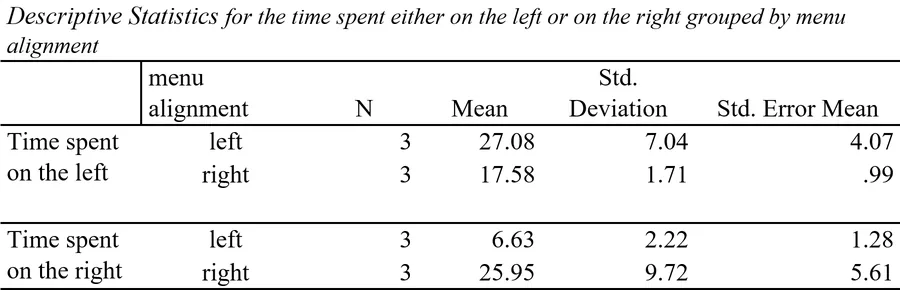

An eye-tracking study of menu-alignment
tl;dr: Most websites nowadays apply a left-aligned main menu, even though there is little evidence that suggests that this form of a menu is advantageous to other forms of menu alignment. Therefore, an eye-tracking study with quasi-experiment between-subject design has been conducted. It used four different versions of a fictitious website. Two of which with left-aligned main menus and two with right-aligned main menus. It was measured which half of the screen was viewed more often and at which half of the screen there were more fixations. Participants were either assigned to the group with left menu alignment or with right menu alignment, and were then asked to complete simple tasks on the website. In both groups, the number of views and fixations did not differ significantly for the left side of the screen, but the group with the right-aligned menu condition have a significantly higher amount of fixations on the right side of the screen.
BACKGROUND
It is known that humans often determine the importance of visual content within the first eye glimpses. Previous research has shown that people spent the overwhelming majority of their time on the internet viewing the left side of the screen. Studies, however, also show that fixations on the left and right sides of the screen may be due to the current way that websites tend to be structured.
Users, for example, tend to view the left side of the screen to interact with the main menu and the right side of the screen for the scroll bar. In line with that, many websites make use of left-aligned main navigation menus. Also, it was found that while infants tend to focus on the left side of inanimate objects, this tendency is not present among adults, so it is questionable whether left-aligned menus are more user-friendly than right-aligned menus.
RESEARCH GOAL
This research project aimed at investigating whether the common use of left-aligned main menus is actually advantageous for the user or if users only pay more attention to the left side of the screen just because the main menu happened to be there. It was assumed that the user's attention shift follows the main menu.
METHOD
For this study, a convenience sample has been gathered, consisting of six university students. Four different versions of a fictional website have been designed. Two with a left-aligned menu and two with a right-aligned menu. The study employed a quasi-experiment with a between-subject design, in which each participant gets to see two of the menu designs (both either only left-aligned or only right-aligned).
Thus, the alignment of the menu (left vs right) served as the independent variable with two levels and the horizontal attention shift as the dependent variable. For each version of the website, the participants were asked to complete two tasks relating to finding clothing on the website. Thus, each participant was asked four questions in sum. As eye-tracking technology has been proven to be an appropriate means to measure attentional shift, it has been applied in this study to measure the dependent variable. It was measured how long the participants visited the areas of interest (left and right half of the screen) and how long they were fixated on it.
After the data was gathered and processed the two groups were compared by multiple t-tests to estimate whether there is a statistically significant difference between the mean time spent viewing one of the halves of the screen compared to the other.

RESULTS
In summary, the results of the different analyses indicate that information placement likely has an effect on the extent to which users attend to it when dealing with websites. For the mean fixation on the right side of the screen, it was found that there was a significant difference between the left-aligned menu and the right-aligned menu condition. However, in both menu alignment conditions, participants spend a comparably large part of the time viewing the left side of the screen.
In line with this, it was found for both measures, fixation and visit, that the amount of time that participants spent looking to the left side of the screen did not differ significantly between the experimental group and the control group. This is in contrast to the expectation that participants in the right aligned menu condition would visit and fixate on the left side of the screen significantly less than participants in the left menu alignment condition. It is possible that the tendency to look towards the left side of the screen can be attributed to prior experience of the participant.